30w单细胞数据会吃掉多少内存？
原文：https://mp.weixin.qq.com/s?__biz=MzAwMzIzOTk5OQ==&mid=2247525849&idx=1&sn=aa48c5e9405afcf28ffccb7bb4312e70&chksm=9b3c1c89ac4b959faa1e531dd134995b6345a896fefa2b0f82b55acfb3528850ed924ac43cde#rd 合集：单细胞教程全收录 / 答读者问
写在前面

因为不推荐用自己的电脑做生信，我们一致致力于给大家提提供高性价比的计算设备：足够支持你完成硕博生涯的生信环境。很多同学问我们特惠版的256GB 内存和专业版的512GB 内存分别能够分析多少个样本的单细胞数据。
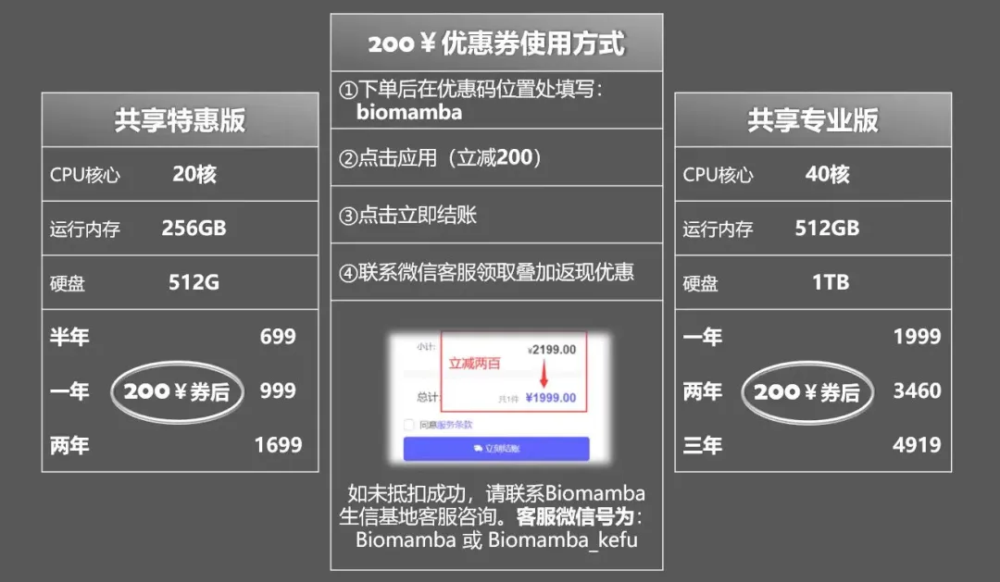
显然当前单细胞平台众多的背景下，不同单细胞数据的细胞数、基因数/Counts数均不相同；按照样本量去估测分析硬件需求是不科学的，用细胞的数量去评估内存的占用情况更加的合理。因此我们用共享服务器进行了一个2.5w 细胞-30w 单细胞数据的基础分析(R语言版参考：scRNA-Seq学习手册Seurat V5更新版，Python版参考：scRNA-Seq学习手册Python版)流程所需要花费的内存与时间。初步测试结果为：
内存 消耗：
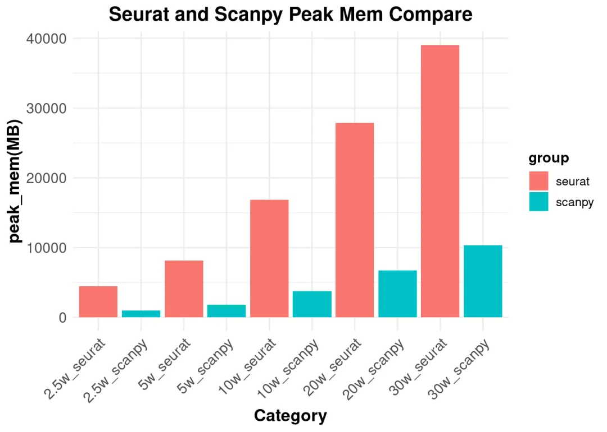
时间 消耗：
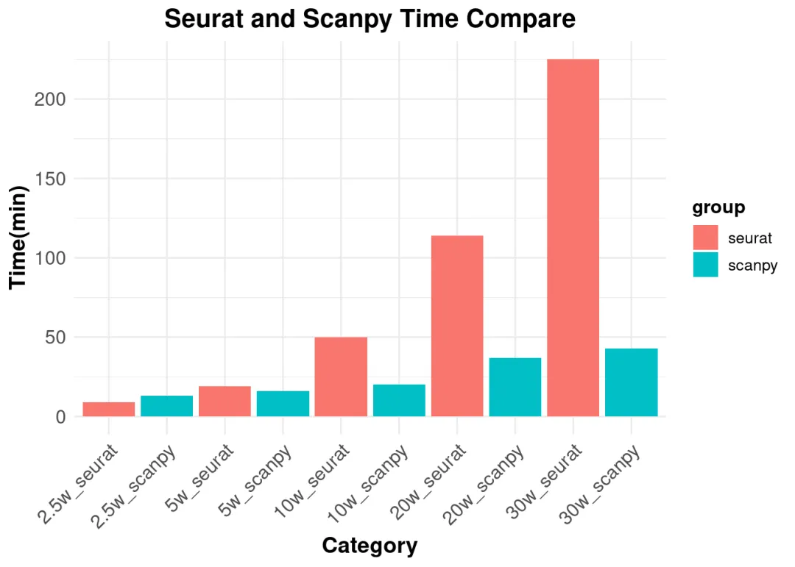
我们测试的30W个细胞已经是比较大的数据了，可以看出基础流程占用的内存空间在R(Seurat)中大约占据40GB，在Python(Scanpy)中大约占据10GB。当然我们的服务器现在最多有512GB的内存，远达不到内存的极限。单从基础流程来看，完成约100W 数量级单细胞的基础分析应当不在话下。需要注意的是，就单细胞而言，数据集之间的整合或者下游的进阶分析会更加的占据内存(例如五万个细胞 的monocle2拟时序分析峰值内存占用可能达到300GB+)。如果只进行基础分析的同学无脑选择特惠版(256GB)即可，需要进阶分析或者百万级单细胞数据分析的同学建议选择专业版(512GB)。另外，从性价比的角度来说，无论是考虑计算时间还是内存占用，都推荐大家学好python：
测试过程
如果你对下面的教程比较迷茫，那么你可以先行学习编程教程：十小时学会Linux
生信Linux及服务器使用技巧R语言基础学习手册
如果你的计算机不足以支持下面流程的计算，可按需选用适合自己的计算资源：共享(经济实惠)：有root权限的共享服务器,报我名字立减200￥独享(省电省心)：生信分析不求人
实体(稳定高效)：为实验室准备一份生物信息学不动产
访问链接：https://biomamba.xiyoucloud.net/
更多内容可咨询客服微信[Biomamba_yunying]
一、准备工作
加载包、配置环境：
setwd("~/project/02_mem_test/")
suppressMessages({
library(Seurat)
library(pryr)
library(dplyr)
library(sceasy)
library(anndata)
library(data.table)
library(Matrix)
library(SeuratDisk)
library(peakRAM)
library(ggplot2)
})
reticulate::use_condaenv("/home/cwj/miniconda3/envs/sceasy", required = TRUE)
use_python("/home/cwj/miniconda3/envs/sceasy/bin/python")
1.1单细胞数据集准备
数据来源于GEO数据库中的GSE131907和GSE222318，具体下载链接如下： （1）人类（肺癌）:https://ftp.ncbi.nlm.nih.gov/geo/series/GSE131nnn/GSE131907/suppl/GSE131907%5FLung%5FCancer%5Fraw%5FUMI%5Fmatrix.txt.gz（2）人类（主动脉夹层）：https://ftp.ncbi.nlm.nih.gov/geo/series/GSE222nnn/GSE222318/suppl/GSE222318%5FRaw%5Fgene%5Fcounts%5Fmatrix.csv.gz 此次教程使用了前两个数据集，两个数据集整合后将矩阵重新划分为五个矩阵，分别对应了30万、20万、10万、5万和2.5万细胞数。
count_20w <- fread("~/project/02_mem_test/data/GSE131907_Lung_Cancer_raw_UMI_matrix.txt", data.table = F)
rownames(count_20w) <- count_20w[,1]
count_20w <- count_20w[,-1]
count_10w <- fread("/home/cwj/project/02_mem_test/data/GSE222318_Raw_gene_counts_matrix.csv",data.table = F)
rownames(count_10w) <- count_10w[,1]
count_10w <- count_10w[,-1]
#基于共有基因合并矩阵
inter_gene <- intersect(rownames(count_10w),rownames(count_20w))
count_30w <- cbind(count_10w[inter_gene,],count_20w[inter_gene,])
obj_30w <- CreateSeuratObject(counts = count_30w)
obj_30w_final <- obj_30w %>%
NormalizeData() %>%
FindVariableFeatures() %>%
ScaleData() %>% RunPCA() %>%
FindNeighbors(dims = 1:50) %>%
FindClusters(resolution = 1.2) %>%
RunTSNE(dims = 1:10) %>%
RunUMAP(dims = 1:10)
# saveRDS(obj_30w_final, "/home/cwj/project/02_mem_test/result/obj_30w.rds")
obj_30w_final <- readRDS("/home/cwj/project/02_mem_test/result/obj_30w.rds")
obj_30w_final[["RNA"]] <- as(obj_30w_final[["RNA"]], "Assay")
# sceasy::convertFormat(obj_30w_final, from="seurat", to="anndata", outFile="/home/cwj/project/02_mem_test/result/obj_30w.h5ad")
#矩阵downsample,同时将rds文件转换为H5AD文件
obj_20w <- subset(obj_30w_final,downsample=5000)
# saveRDS(obj_20w, "/home/cwj/project/02_mem_test/result/obj_20w.rds")
# sceasy::convertFormat(obj_20w, from="seurat", to="anndata", outFile="/home/cwj/project/02_mem_test/result/obj_20w.h5ad")
obj_10w <- subset(obj_30w_final,downsample=2000)
# saveRDS(obj_10w, "/home/cwj/project/02_mem_test/result/obj_10w.rds")
# sceasy::convertFormat(obj_10w, from="seurat", to="anndata", outFile="/home/cwj/project/02_mem_test/result/obj_10w.h5ad")
obj_5w <- subset(obj_30w_final,downsample=800)
# saveRDS(obj_5w, "/home/cwj/project/02_mem_test/result/obj_5w.rds")
# sceasy::convertFormat(obj_5w, from="seurat", to="anndata", outFile="/home/cwj/project/02_mem_test/result/obj_5w.h5ad")
obj_2.5w <- subset(obj_30w_final,downsample=400)
# saveRDS(obj_2.5w, "/home/cwj/project/02_mem_test/result/obj_2.5w.rds")
# sceasy::convertFormat(obj_2.5w, from="seurat", to="anndata", outFile="/home/cwj/project/02_mem_test/result/obj_2.5w.h5ad")
1.2 数据导入
导入前面保存好的矩阵，检查矩阵信息
obj_30w <- readRDS("~/project/02_mem_test/result/obj_30w.rds")
obj_20w <- readRDS("~/project/02_mem_test/result/obj_20w.rds")
obj_10w <- readRDS("~/project/02_mem_test/result/obj_10w.rds")
obj_5w <- readRDS("~/project/02_mem_test/result/obj_5w.rds")
obj_2.5w <- readRDS("~/project/02_mem_test/result/obj_2.5w.rds")
二、Seurat时间和内存统计
obj <- c(obj_2.5w,obj_5w,obj_10w,obj_20w,obj_30w)
for (i in obj){
print(peakRAM({
rds <- i %>%
NormalizeData() %>%
FindVariableFeatures() %>%
ScaleData() %>% RunPCA() %>%
FindNeighbors(dims = 1:10) %>%
FindClusters(resolution = 1.2) %>%
RunTSNE(dims = 1:10) %>%
RunUMAP(dims = 1:10)
}))
}
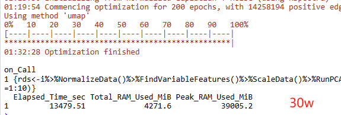
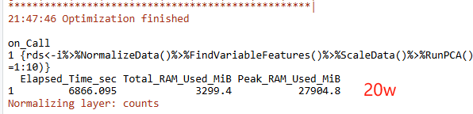
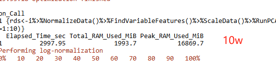
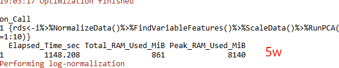
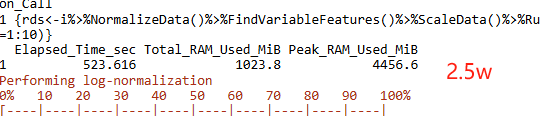
三、Scanpy时间和内存统计
注意这里因为scanpy和reticulate不兼容这个问题无法解决，所以在Rmarkerdown无法展示python脚本的运行结果，单独在终端激活独立的scanpy环境后（conda activate scanpy_env）后执行下面的脚本
# scanpy_env环境创建流程
# conda create -n scanpy_env
# conda activate scanpy_env
# conda install -c conda-forge scanpy python-igraph leidenalg
import numpy as np
import pandas as pd
import scanpy as sc
import seaborn as sns
import tracemalloc
import time
sc.settings.verbosity = 3
sc.settings.set_figure_params(dpi=80)
obj_30w = sc.read("/home/cwj/project/02_mem_test/result/obj_30w.h5ad")
obj_20w = sc.read("/home/cwj/project/02_mem_test/result/obj_20w.h5ad")
obj_10w = sc.read("/home/cwj/project/02_mem_test/result/obj_10w.h5ad")
obj_5w = sc.read("/home/cwj/project/02_mem_test/result/obj_5w.h5ad")
obj_2_5w = sc.read("/home/cwj/project/02_mem_test/result/obj_2.5w.h5ad")
# 测试不同数量级细胞时间和内存消耗
adata = obj_2_5w
adata.var_names_make_unique()
# 启用 tracemalloc 以跟踪内存分配
tracemalloc.start()
# 计时开始
start_time = time.time()
sc.pp.normalize_total(adata, target_sum=1e4)
sc.pp.log1p(adata)
sc.pp.highly_variable_genes(adata, n_top_genes=2000)
sc.tl.pca(adata)
sc.pp.neighbors(adata, n_neighbors=10)
sc.tl.umap(adata)
sc.tl.leiden(adata, flavor="igraph", n_iterations=2, resolution=1)
sc.pl.umap(adata, color=["leiden"])
end_time = time.time()
current, peak = tracemalloc.get_traced_memory()
elapsed_time = (end_time - start_time)/60
current_memory_usage = current / 10**6 # 转换为 MB
peak_memory_usage = peak / 10**6 # 转换为 MB
print(f"运行时间: {elapsed_time:.0f} 分")
print(f"当前内存使用量: {current_memory_usage:.2f} MB")
print(f"峰值内存使用量: {peak_memory_usage:.2f} MB")
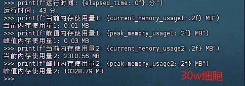
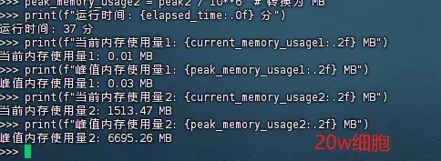
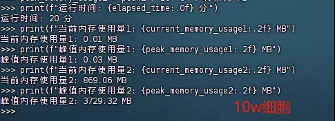
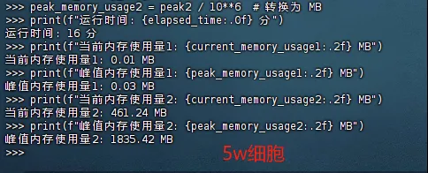
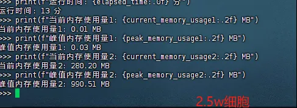
四、总结、可视化
sum <- data.frame(matrix(NA, nrow = 10, ncol = 3))
colnames(sum) <- c("time","total_mem","peak_mem")
row.names(sum) <- c("2.5w_seurat","2.5w_scanpy","5w_seurat","5w_scanpy","10w_seurat","10w_scanpy","20w_seurat","20w_scanpy","30w_seurat","30w_scanpy")
sum["2.5w_seurat",] <- c(9,1024,4457)
sum["2.5w_scanpy",] <- c(13,280,990)
sum["5w_seurat",] <- c(19,861,8140)
sum["5w_scanpy",] <- c(16,461,1835)
sum["10w_seurat",] <- c(50,1994,16870)
sum["10w_scanpy",] <- c(20,869,3729)
sum["20w_seurat",] <- c(114,3299,27905)
sum["20w_scanpy",] <- c(37,1513,6695)
sum["30w_seurat",] <- c(225,4292,39005)
sum["30w_scanpy",] <- c(43,2310,10328)
sum$Category <- rownames(sum)
sum$Category <- factor(sum$Category, levels=sum$Category)
sum$group <- c("seurat","scanpy","seurat","scanpy","seurat","scanpy","seurat","scanpy","seurat","scanpy")
sum$group <- factor(sum$group, levels=c("seurat","scanpy"))
ggplot(sum, aes(x = Category , y = time, fill= group)) + geom_bar(stat = "identity")+
labs(x = "Category", y = "Time(min)", title = "Seurat and Scanpy Time Compare") +
theme_minimal() +
theme(axis.text.x = element_text(angle = 45, hjust = 1, size = 12),
axis.text.y = element_text(size = 12),
axis.title = element_text(size = 14, face = "bold"),
plot.title = element_text(size = 16, face = "bold", hjust = 0.5),
legend.title = element_text(size = 12, face = "bold"),
legend.text = element_text(size = 10))
计算时间比较：
ggplot(sum, aes(x = Category, y = peak_mem, fill= group)) + geom_bar(stat = "identity")+
labs(x = "Category", y = "peak_mem(MB)", title = "Seurat and Scanpy Peak Mem Compare") +
theme_minimal() +
theme(axis.text.x = element_text(angle = 45, hjust = 1, size = 12),
axis.text.y = element_text(size = 12),
axis.title = element_text(size = 14, face = "bold"),
plot.title = element_text(size = 16, face = "bold", hjust = 0.5),
legend.title = element_text(size = 12, face = "bold"),
legend.text = element_text(size = 10))
计算过程中占用峰值内存比较：
变量对象占据总内存比较：
ggplot(sum, aes(x = Category, y = total_mem, fill= group)) + geom_bar(stat = "identity")+
labs(x = "Category", y = "total_mem(MB)", title = "Seurat and Scanpy Total Mem Compare") +
theme_minimal() +
theme(axis.text.x = element_text(angle = 45, hjust = 1, size = 12),
axis.text.y = element_text(size = 12),
axis.title = element_text(size = 14, face = "bold"),
plot.title = element_text(size = 16, face = "bold", hjust = 0.5),
legend.title = element_text(size = 12, face = "bold"),
legend.text = element_text(size = 10))
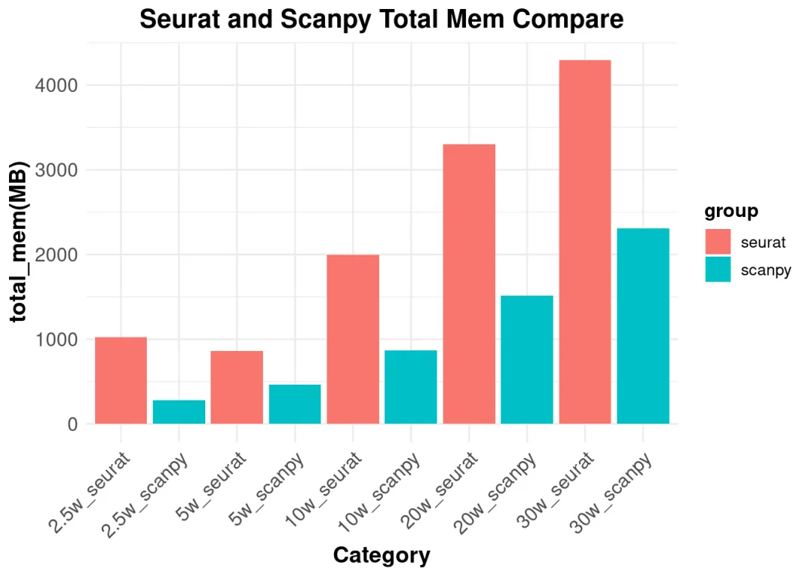
测试文件
测试文件链接:
https://pan.baidu.com/s/1RkIOtJqHvvtFqFpB2vLwpw?pwd=pksm
提取码: pksm

如何联系我们

 公众号后台消息回复不便，这里给大家留一下客服微信号 ，方便各位随时交流、提建议（别问在么，添加时直接说来意）。此外呼声一直很高的交流群 也建好了，欢迎大家入群讨论：
公众号后台消息回复不便，这里给大家留一下客服微信号 ，方便各位随时交流、提建议（别问在么，添加时直接说来意）。此外呼声一直很高的交流群 也建好了，欢迎大家入群讨论：
大家可以阅读完这几篇之后添加给生信入门初学者的小贴士 如何搜索公众号过往发布内容
已有生信基地联系方式的同学无需重复添加

 您点的每个赞和在看，我都认真当成了喜欢
您点的每个赞和在看，我都认真当成了喜欢